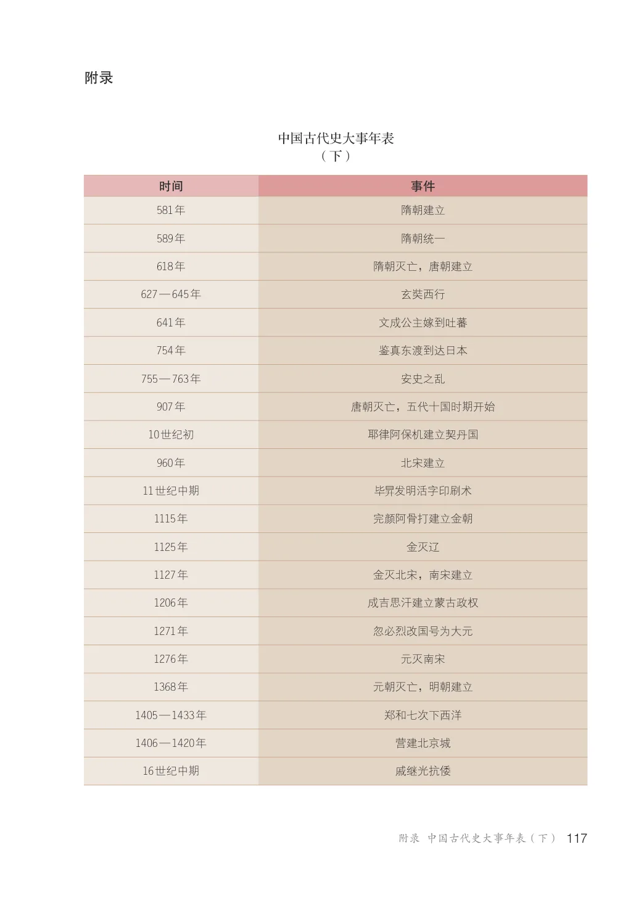
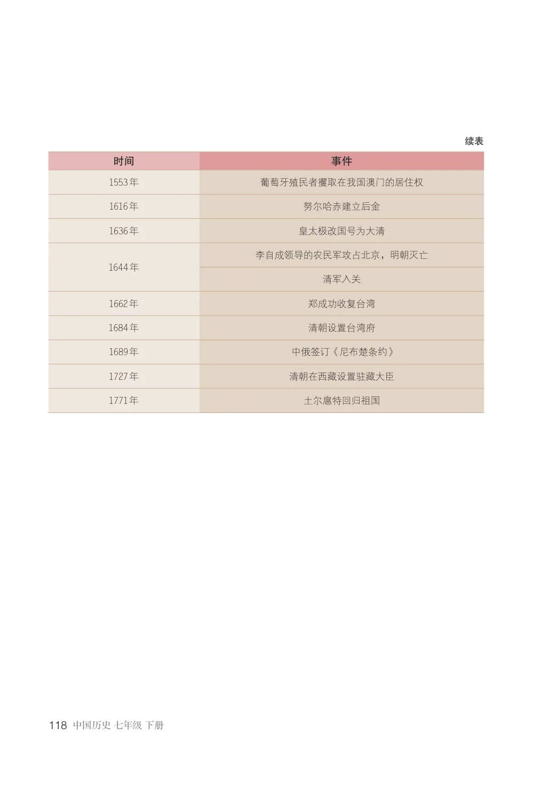
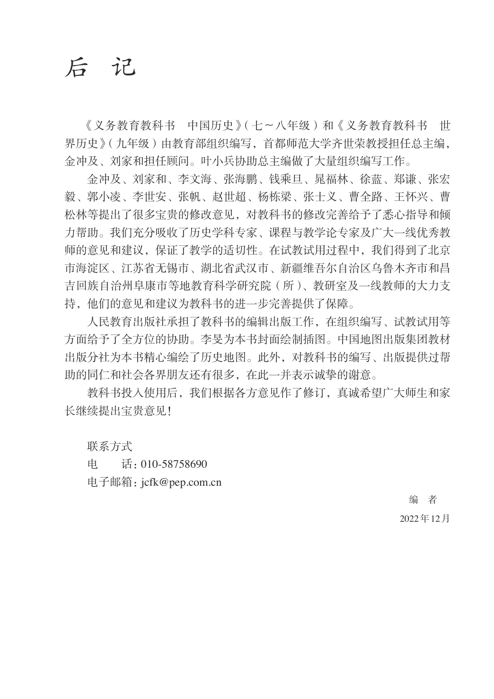
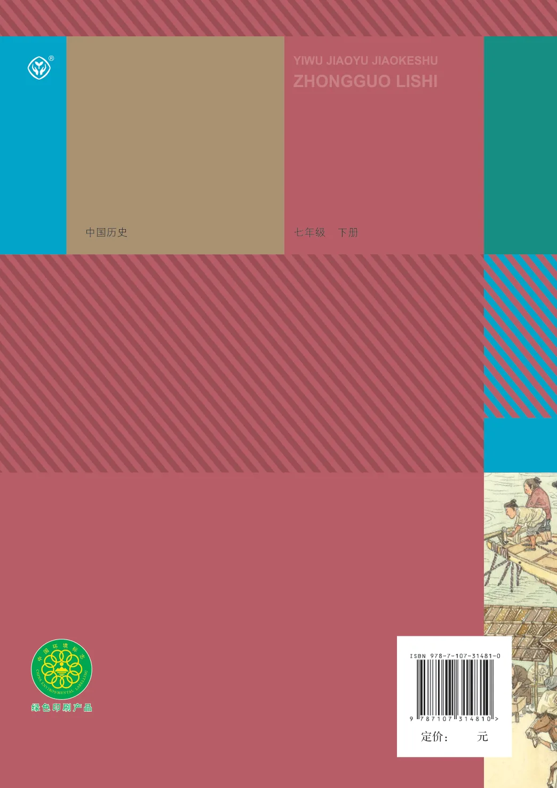

附录 · 教材第 117–121 页
中国古代史大事年表（下）
文字版依据教材 PDF 文本层整理；复杂地图、图表及版面关系请以右侧教材原页为准。
附录
中国古代史大事年表（下）
时间事件
581年隋朝建立
589年隋朝统一
618年隋朝灭亡，唐朝建立
627—645年玄奘西行
641年文成公主嫁到吐蕃
754年鉴真东渡到达日本
755—763年安史之乱
907年唐朝灭亡，五代十国时期开始
10世纪初耶律阿保机建立契丹国
960年北宋建立
11世纪中期毕发明活字印刷术
1115年完颜阿骨打建立金朝
1125年金灭辽
1127年金灭北宋，南宋建立
1206年成吉思汗建立蒙古政权
1271年忽必烈改国号为大元
1276年元灭南宋
1368年元朝灭亡，明朝建立
1405—1433年郑和七次下西洋
1406—1420年营建北京城
16世纪中期戚继光抗倭

时间事件
1553年葡萄牙殖民者攫取在我国澳门的居住权
1616年努尔哈赤建立后金
1636年皇太极改国号为大清
李自成领导的农民军攻占北京，明朝灭亡
1644年
清军入关
1662年郑成功收复台湾
1684年清朝设置台湾府
1689年中俄签订《尼布楚条约》
1727年清朝在西藏设置驻藏大臣
1771年土尔扈特回归祖国

后记
《义务教育教科书中国历史》（七〜八年级）和《义务教育教科书世界历史》（九年级）由教育部组织编写，首都师范大学齐世荣教授担任总主编，金冲及、刘家和担任顾问。叶小兵协助总主编做了大量组织编写工作。金冲及、刘家和、李文海、张海鹏、钱乘旦、晁福林、徐蓝、郑谦、张宏毅、郭小凌、李世安、张帆、赵世超、杨栋梁、张士义、曹全路、王怀兴、曹松林等提出了很多宝贵的修改意见，对教科书的修改完善给予了悉心指导和倾力帮助。我们充分吸收了历史学科专家、课程与教学论专家及广大一线优秀教师的意见和建议，保证了教学的适切性。在试教试用过程中，我们得到了北京市海淀区、江苏省无锡市、湖北省武汉市、新疆维吾尔自治区乌鲁木齐市和昌吉回族自治州阜康市等地教育科学研究院（所）、教研室及一线教师的大力支持，他们的意见和建议为教科书的进一步完善提供了保障。人民教育出版社承担了教科书的编辑出版工作，在组织编写、试教试用等方面给予了全方位的协助。李旻为本书封面绘制插图。中国地图出版集团教材出版分社为本书精心编绘了历史地图。此外，对教科书的编写、出版提供过帮助的同仁和社会各界朋友还有很多，在此一并表示诚挚的谢意。教科书投入使用后，我们根据各方意见作了修订，真诚希望广大师生和家长继续提出宝贵意见！
联系方式电话：010-58758690电子邮箱：jcfk@pep.com.cn
编者2022年12月

本页主要为图片或图表，请参看右侧教材原页。
YIWU JIAOYU JIAOKESHU
ZHONGGUO LISHI
七年级下册中国历史
